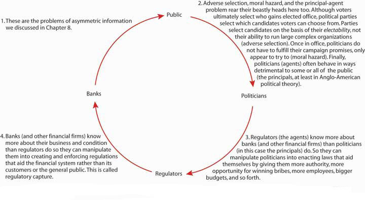
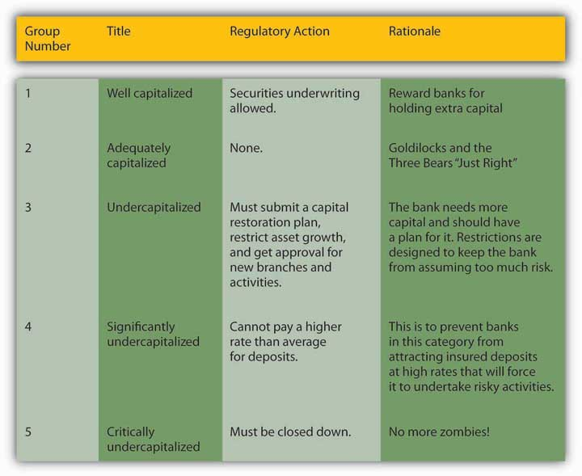

By the end of this chapter, students should be able to:
Some regulations are clearly salubrious and should be retained. The main justifications for financial system regulation—market failuresThe inefficient allocation of resources by a free market caused by asymmetric information, externalities (costs or benefits not reflected in market prices), natural monopolies or other forms of excessive market power, and public goods (goods like national defense that cannot be profitably supplied by non-government entities due to free-rider problems).—do occur, and government regulations can, and sometimes have, helped to mitigate them. Like everything else in life, however, regulations are costly (not gratis) and hence entail trade-offs. As detailed in another chapter, they induce perfectly legal but bureaucratically disruptive loophole miningThe search for ways around regulations. and lobbyingAttempts to change regulations. activities. They can also lead to severely twisted, unintended consequencesEvents (usually negative) caused by regulations that lawmakers did not foresee., like banks purposely making bad loans.
The goal of this chapter is not to bash all regulation but rather to critique specific financial regulations in the hopes of creating better regulatory policies in the (hopefully near) future. The place to start, I believe, is to think about what regulators and regulations cannot do, and that is fix the world by decree. Simply making an activity illegal does not mean that it will stop. Because the government faces a budget constraint and opportunity costs, it can’t afford to monitor everyone all the time. What’s bad for some is often good for others, so many people willingly supply illegal goods or activities. As a result, many illegal activities are commonplace; in no particular order, sodomy, drug use, reckless use of automobiles, and music piracy come to mind. This may seem like a simple point, but many people believe that regulation can really work if only regulations, and the regulators charged with enforcing them, are strengthened. If regulations failed in the past, they believe that means regulators needed more money or authority, or both.
The problem with this view, however, is that government officials may not be the angels many people assume they are. It’s not their fault. Especially if they went through the U.S. public school system, they likely learned an interpretation of government called the public interest model. As its name suggests, the public interest modelA model of government developed by political scientists that posits that politicians, bureaucrats, and other government workers serve the public in lieu of themselves. posits that government officials work in the interests of the public, of “the people,” if you will. It’s the sort of thing Abraham Lincoln had in mind in his famous Gettysburg Address when he said “that government of the people, by the people, for the people, shall not perish from the earth.”showcase.netins.net/web/creative/lincoln/speeches/gettysburg.htm That’s outstanding political rhetoric, better than anything current spin artists concoct, but is it a fair representation of reality?
Many economists think not. They believe that private interest prevails, even in the government. According to their model, called the public choiceSee private interest model. or, less confusingly, the private interest modelA model of government developed by economists that posits that politicians, bureaucrats, and other government workers serve themselves in lieu of the citizens or public., politicians and bureaucrats often behave in their own interests rather than those of the public. Of course, they don’t go around saying that we need law X or regulation Y to help me to get rich via bribes, to bailout my brother-in-law, or to ensure that I soon receive a cushy job in the private sector. Rather, they say that we need law X or regulation Y to protect widows and orphans, to stymie the efforts of bad guys, or to make the rich pay for their success.
In many countries, the ones we will call “predatory” in the context of the Growth Diamond model, the private interest model clearly holds sway. In rich countries, the public interest model becomes more plausible. Nevertheless, many economic regulations, though clothed in public interest rhetoric, appear on close inspection to conform to the private interest model. As University of Chicago economist and Nobel Laureate George Stiglerwww.econlib.org/LIBRARY/Enc/bios/Stigler.html pointed out decades ago, regulators are often “captured”en.wikipedia.org/wiki/Regulatory_capture by the industry they regulate. In other words, the industry establishes regulations for itself by influencing the decisions of regulators. Financial regulators, as we’ll see, are no exception.
Regardless of regulators’ and politicians’ motivations, another very sticky question arises: could regulators stop bad activities, events, and people even if they wanted to? The answer in many contexts appears to be an unequivocal “No!” The reason is our old nemesis, asymmetric information, which, readers should recall, inheres in nature and pervades all. It flummoxes governments as much as markets and intermediaries. The implications of this insight are devastating for the effectiveness of regulators and their regulations, as Figure 11.1 "Asymmetric information and regulation" makes clear.
Figure 11.1 Asymmetric information and regulation
Source: Adapted from James R. Barth, Gerard Caprio Jr., and Ross Levine, Rethinking Bank Regulation: Til Angels Govern (New York: Cambridge University Press, 2006), 6.
Although Figure 11.1 "Asymmetric information and regulation" is esthetically pleasing (great job, guys!) it does not paint a pretty picture. Due to multiple levels of nearly intractable problems of asymmetric information, democracyA type of government that is of, for, and by the people because it allows citizens to choose candidates and policies via elections. is no guarantee that government will serve the public interest. Matters are even worse in societies still plagued by predatory governmentA type of government that is of, for, and by the ruling elite and that fails to supply basic public goods like life, liberty, and property., where corruption further fouls up the works by giving politicians, regulators, and bankers (and other financiers) incentives to perpetuate the current system, no matter how suboptimal it may be from the public’s point of view.
And if you really want to get your head spinning, consider this: agency problems within the government, within regulatory bureaucracies, and within banks abound. Within banks, traders and loan officers want to keep their jobs, earn promotions, and bring home large bonuses. They can do the latter two by taking large risks, and sometimes they choose to do so. Sometimes shareholders want to take on much larger risks than managers or depositors or other debt holders do. Sometimes it’s the managers who have incentives to place big bets, to get their stock options “in the money.”www.investorwords.com/2580/in_the_money.html Within bureaucracies, regulators have incentives to hide their mistakes and to take credit for good outcomes, even if they had little or nothing to do with them. The same is true for the government, where the legislature may try to discredit the executive’s policies, or vice versa, and withhold information or even spread disinformation to “prove” its case.
In the 1910s and early 1920s, a majority of U.S. states passed securities regulations called Blue Sky Laws that ostensibly sought to prevent slimy securities dealers from selling nothing but the blue sky to poor, defenseless widows and orphans. Can you figure out what was really going on? (Hint: Recall that this was a period of traditional banking, unit banks, the 3-6-3 rule, and all that. Recall, too, that securities markets are an alternative method of linking investors to borrowers.)
We probably gave it away with that last hint. Blue Sky Laws, scholars now realize, were veiled attempts to protect the monopolies of unit bankers upset about losing business to the securities markets. Unable to garner public sympathy for their plight, the bankers instead spoke in terms of public interest, of defrauded widows and orphans. There were certainly some scams about, but not enough to warrant the more virulent Blue Sky Laws, which actually gave state officials the power to forbid issuance of securities they didn’t like, and in some states, that was most of them!
It’s okay if you feel a bit uneasy with these new ideas. I think that as adults you can handle straight talk. It’ll be better for everyone—you, me, our children and grandchildren—if you learn to look at the government’s actions with a critical eye. Regulators have failed in the past and will do so again unless we align the interests of all the major parties depicted in Figure 11.1 "Asymmetric information and regulation" more closely, empowering market forces to do most of the heavy lifting.
Time again, government regulators have either failed to stop financial crises or have exacerbated them. Examples are too numerous to discuss in detail here, so we will address only two of the more egregious cases, the Great Depression of the 1930s and the Savings and Loan (S&L) Crisis of the 1980s.
Generally when economic matters go FUBAR (Fouled Up Beyond All Recognition in polite circles), observers blame either “market failures” like asymmetric information and externalitiesCosts or benefits of an economic activity that are not included in the price, that are not internalized by the buyer and/or seller. Negative externalities, like pollution, impose costs on society; positive externalities, like education, provide societal benefits., or they blame the government. Reality is rarely that simple. Most major economic foul-ups stem from a combination of market and government failures, what I like to call hybrid failures. So while it would be an exaggeration to claim that government policies were the only causes of the Great Depression or the Savings and Loan Crisis, it is fair to say that they made matters worse, much worse.
The stock market crash of 1929 did not start the Great Depression, but it did give the economy a strong push downhill.stocks.fundamentalfinance.com/stock-market-crash-of-1929.php A precipitous decline in stock prices like that of 1929 can cause uncertainty to increase and balance sheets to deteriorate, worsening asymmetric information problems and leading to a decline in economic activity. That, in turn, can cause bank panics, further increases in asymmetric information, and yet further declines in economic activity followed by an unanticipated decline in the price level. As Figure 11.2 "Major macro variables during the Great Depression" shows, that is precisely what happened during the Great Depression—per capita gross domestic product (GDP) shrank, the number of bankruptcies soared, M1 and M2 (measures of the money supply) declined, and so did the price level.
Figure 11.2 Major macro variables during the Great Depression

Weren’t evil financiers completely responsible for this mess, as nine out of ten people thought at the time? Absolutely not. For starters, very few financiers benefited from the depression and they did not have the ability to cause such a mess. Most would have stopped the downward spiral if it was in their power to do so, as J. P. Morgan did when panic seized the financial system in 1907.www.bos.frb.org/about/pubs/panicof1.pdf In fact, only the government had the resources and institutions to stop the Great Depression and it failed to do so. Mistake number one occurred during the 1920s, when the government allowed stock and real estate prices to rise to dizzying heights. (The Dow Jones Industrial Average started the decade at 108.76, dropped to around 60, then began a slow climb to 200 by the end of 1927. It hit 300 by the end of 1928 and 350 by August 1929.)measuringworth.com/datasets/DJA By slowly raising interest rates beginning in, say, mid-1928, the Federal Reserve (Fed) could have deflated the stock market bubbleOccurs when the price of an asset rises significantly above its rational range, with its price based on fundamentals like interest rates, profitability, and so forth. before it grew to enormous proportions and burst in 1929.
Mistake number two occurred after the crash, in late 1929 and 1930, when the Federal Reserve raised interest rates. A much better policy response at that point would have been to lower interest rates in order to help troubled banks and stimulate business investment and hence private job growth. In addition, the Federal Reserve did not behave like a lender of last resort (LLR)A clearinghouse, central bank, or government that lends during crises, usually by following some variant of Bagehot’s Rule/Hamilton’s Rule. during the crisis and follow Bagehot’s/Hamilton’s RuleA policy, described first by Alexander Hamilton and later by Walter Bagehot, in which, during a crisis, a lender of last resort lends freely at a penalty rate to all borrowers who can post sufficient collateral.. Before the Fed began operations in the fall of 1914, regional clearinghousesSupport institutions that help banks to clear sums due to each other arising from checks, notes, loans, and other banking activities. Prior to 1914, clearinghouses also acted as lenders of last resort during panics. had acted as LLRs, but during the Depression they assumed, wrongly as it turned out, that the Fed had relieved them of that responsibility. They were, accordingly, unprepared to thwart major bank runs.Michael Bordo and David Wheelock, “The Promise and Performance of the Federal Reserve as Lender of Last Resort,” Norges Bank Working Paper 201 (20 January 2011). papers.ssrn.com/sol3/papers.cfm?abstract_id=1847472
The government’s third mistake was its banking policy. The United States was home to tens of thousands of tiny unit banks that simply were not large or diversified enough to ride out the depression. If a factory or other major employer succumbed, the local bank too was doomed. Depositors understood this, so at the first sign of trouble they ran on their banks, pulling out their deposits before they went under. Their actions guaranteed that their banks would indeed fail. Meanwhile, across the border in Canada, which was home to a few large and highly diversified banks, few bank disturbances took place. California also weathered the Great Depression relatively well, in part because its banks, which freely branched throughout the large state, enjoyed relatively well-diversified assets and hence avoided the worst of the bank crises.
The government’s fourth failure was to raise tariffs in a misguided attempt to “beggar thy neighbor.”www.state.gov/r/pa/ho/time/id/17606.htm Detailed analysis of this failure, which falls outside the bailiwick of finance, I’ll leave to your international economics textbook and a case elsewhere in this book. Here, we’ll just paraphrase Mr. Mackey from South Park: “Tariffs are bad, mmmkay?”en.wikipedia.org/wiki/List_of_staff_at_South_Park_Elementary#Mr._Mackey
But what about Franklin Delano Roosevelt (FDR)www.whitehouse.gov/history/presidents/fr32.html and his New Deal?newdeal.feri.org Didn’t the new administration stop the Great Depression, particularly via deposit insurance, Glass-Steagall, securities market reforms, and reassuring speeches about having nothing to fear but fear itself?historymatters.gmu.edu/d/5057 The United States did suffer its most acute banking crisis in March 1933, just as FDR took office on March 4.www.bartleby.com/124/pres49.html (The Twentieth Amendment, ratified in 1938, changed the presidential inauguration date to January 20, which it is to this day.) But many suspect that FDR himself brought the crisis on by increasing uncertainty about the new administration’s policy path. Whatever the cause of the crisis, it shattered confidence in the banking system. FDR’s creation of a deposit insurance scheme under the aegis of a new federal agency, the Federal Deposit Insurance Corporation (FDIC), did restore confidence, inducing people to stop running on the banks and thereby stopping the economy’s death spiral. Since then, bank runs have been rare occurrences directed at specific shaky banks and not system-wide disturbances as during the Great Depression and earlier banking crises.
But as with everything in life, deposit insurance is far from cost-free. In fact, the latest research suggests it is a wash. Deposit insurance does prevent bank runs because depositors know the insurance fund will repay them if their bank goes belly up. (Today, it insures $250,000 per depositor per insured bank. For details, browse http://www.fdic.gov/deposit/deposits/insured/basics.html) However, insurance also reduces depositor monitoring, which allows bankers to take on added risk. In the nineteenth century, depositors disciplined banks that took on too much risk by withdrawing their deposits. As we’ve seen, that decreases the size of the bank and reduces reserves, forcing bankers to decrease their risk profile. With deposit insurance, depositors (quite rationally) blithely ignore the adverse selection problem and shift their funds to wherever they will fetch the most interest. They don’t ask how Shaky Bank is able to pay 15 percent for six-month certificates of deposit (CDs) when other banks pay only 5 percent. Who cares, they reason, my deposits are insured! Indeed, but as we’ll learn below, taxpayers insure the insurer.
Another New Deal financial reform, Glass-Steagall, in no way helped the U.S. economy or financial system and may have hurt both. For over half a century, Glass-Steagall prevented U.S. banks from simultaneously engaging in commercial (taking deposits and making loans) and investment banking (underwriting securities and advising on mergers) activities. Only two groups clearly gained from the legislation, politicians who could thump their chests on the campaign stump and claim to have saved the country from greedy financiers and, ironically enough, big investment banks. The latter, it turns out, wrote the act and did so in such a way that it protected their oligopoly from the competition of commercial banks and smaller, more retail-oriented investment banks. The act was clearly unnecessary from an economic standpoint because most countries had no such legislation and suffered no ill effects because of its absence. (The Dodd-Frank Act’s Volcker Rule represents a better approach because it outlaws various dubious practices, like proprietary trading, not valid organizational forms).
The Security and Exchange Commission’s (SEC) genesis is almost as tawdry and its record almost as bad. The SEC’s stated goal, to increase the transparency of America’s financial markets, was a laudable one. Unfortunately, the SEC simply does not do its job very well. As the late, great, free-market proponent Milton Friedman put it:
“You are not free to raise funds on the capital marketsThis part is inaccurate. Financiers went loophole mining and found a real doozy called a private placement. As opposed to a public offering, in a private placement securities issuers can avoid SEC disclosure requirements by selling directly to institutional investors like life insurance companies and other “accredited investors” (legalese for “rich people”). unless you fill out the numerous pages of forms the SEC requires and unless you satisfy the SEC that the prospectus you propose to issue presents such a bleak picture of your prospects that no investor in his right mind would invest in your project if he took the prospectus literally.This part is all too true. Check out the prospectus of Internet giant Google at www.sec.gov/Archives/edgar/data/1288776/000119312504142742/ds1a.htm. If you don’t dig Google, check out any company you like via Edgar, the SEC’s filing database, at www.sec.gov/edgar.shtml. And getting SEC approval may cost upwards of $100,000—which certainly discourages the small firms our government professes to help.”
As noted above, the FDIC insures bank deposits up to $250,000 per depositor per insured bank. What if an investor wants to deposit $1 million or $1 billion? Must the investor put most of her money at risk?
Depositors can loophole mine as well as anyone. And they did, or, to be more precise, intermediaries known as deposit brokers did. Deposit brokers chopped up big deposits into insured-sized chunks, then spread them all over creation. The telecommunications revolution made this relatively easy and cheap to do, and the S&L crisis created many a zombie bank willing to pay high interest for deposits.
Although the economy improved after 1933, regulatory regimes did not. Ever fearful of a repeat of the Great Depression, U.S. regulators sought to make banks highly safe and highly profitable so none would ever dare to fail. Basically, the government regulated the interest rate, assuring banks a nice profit—that’s what the 3-6-3 ruleTongue-in-cheek rule of thumb for heavily regulated banks that took deposits at 3 percent, made loans at 6 percent, and allowed their managers to leave at 3 p.m. to play golf. was all about. Regulators also made it difficult to start a new bank to keep competition levels down, all in the name of stability. The game worked well until the late 1960s, then went to hell in a handbasket as technological breakthroughs and the Great Inflation conspired to destroy traditional banking.
Here’s where things get interesting. Savings and loan associations were particularly hard hit by the changed financial environment because their gaps were huge. The sources of their funds were savings accounts and their uses were mortgages, most of them for thirty years at fixed rates. Like this:
| Typical Savings and Loan Bank Balance Sheet (Millions USD) | |
|---|---|
| Assets | Liabilities |
| Reserves $10 | Deposits $130 |
| Securities $10 | Borrowings $15 |
| Mortgages $130 | Capital $15 |
| Other assets $10 | |
| Totals $160 | $160 |
Along comes the Great Inflation and there go the deposits. Then S&L’s balance sheets looked like this:
| Typical Savings and Loan Bank Balance Sheet (Millions USD) | |
|---|---|
| Assets | Liabilities |
| Reserves $1 | Deposits $100 |
| Securities $1 | Borrowings $30 |
| Mortgages $130 | Capital $10 |
| Other assets $8 | |
| Totals $140 | $140 |
This bank is clearly in deep doodoo. Were it alone, it soon would have lost its remaining capital and failed. But there were some 750 of them in like situation. So they went to the regulators and asked for help. The regulators were happy to oblige because they did not want to have a bunch of failed banks on their hands, especially given that the deposits of those banks were insured. So regulators eliminated the interest rate caps and allowed S&Ls to engage in a variety of new activities, like making commercial real estate loans and buying junk bonds, hitherto forbidden. Given the demise of traditional banking, that was a reasonable response. The problem was that most S&L bankers didn’t have a clue about how to do anything other than traditional banking. Most of them got chewed. Their balance sheets then began to resemble a train wreck:
| Typical Savings and Loan Bank Balance Sheet (Millions USD) | |
|---|---|
| Assets | Liabilities |
| Reserves $1 | Deposits $120 |
| Securities $1 | Borrowings $22 |
| Mortgages $130 | Capital $0 |
| Other assets $10 | |
| Totals $142 | $142 |
Now comes the most egregious part. Fearful of losing their jobs, regulators kept these economically dead (capital < $0) banks alive. Instead of shutting them down, they engaged in what is called regulatory forbearanceWhenever regulators, for whatever reason, consciously decide not to enforce one or more regulations.. Specifically, they allowed S&Ls to add “goodwill” to the asset side of their balance sheets, restoring them to life—on paper. (Technically, they allowed the banks to switch from generally accepted accounting principles [GAAP] to regulatory accounting principles [RAP].) Seems like a cool thing for the regulators to do, right? Wrong! A teacher can pass a kid who can’t read, but the kid still can’t read. Similarly, a regulator can pass a bank with no capital, but still can’t make the bank viable. In fact, the bank situation is worse because the kid has other chances to learn to read. By contrast zombie banks, as these S&Ls were called, have little hope of recovery. Regulators should have shot them in the head instead, which as any zombie-movie fan knows is the only way to stop the undead dead in their tracks.www.margrabe.com/Devil/DevilU_Z.html;www.ericlathrop.com/notld
Recall that if somebody has no capital, no skin in the game, to borrow Warren Buffett’s phrase again, moral hazard will be extremely high because the person is playing only with other people’s money. In this case, the money wasn’t even that of depositors but rather of the deposit insurer, a government agency. The managers of the S&Ls did what anyone in the same situation would do: they rolled the dice, engaging in highly risky investments funded with deposits and borrowings for which they paid a hefty premium. In other words, they borrowed from depositors and other lenders at high rates and invested in highly risky loans. A few got lucky and pulled their banks out of the red. Most of the risky loans, however, quickly turned sour. When the whole thing was over, their balance sheets looked like this:
| Typical Savings and Loan Bank Balance Sheet (Millions USD) | |
|---|---|
| Assets | Liabilities |
| Reserves $10 | Deposits $200 |
| Securities $10 | Borrowings $100 |
| Mortgages $100 | Capital −$60 |
| Goodwill $30 | |
| Crazy, risky loans $70 | |
| Other assets $20 | |
| Totals $240 | $240 |
The regulators could no longer forbear. The insurance fund could not meet the deposit liabilities of the thousands of failed S&Ls, so the bill ended up in the lap of U.S. taxpayers.
In the 1980s, in response to the Great Inflation and the technological revolution, regulators in Scandinavia (Sweden, Norway, and Finland) deregulated their heavily regulated banking systems. Bankers who usually lent only to the best borrowers at government mandated rates suddenly found themselves competing for both depositors and borrowers. What happened?
Scandinavia suffered from worse banking crises than the United States. In particular, Scandinavian bankers were not very good at screening good from bad borrowers because they had long been accustomed to lending to just the best. They inevitably made many mistakes, which led to defaults and ultimately asset and capital write-downs.
The most depressing aspect of this story is that the United States has unusually good regulators. As Figure 11.3 "Banking crises around the globe through 2002" shows, other countries have suffered through far worse banking crises and losses. Note that at 3 percent of U.S. GDP, the S&L crisis was no picnic, but it pales in comparison to the losses in Argentina, Indonesia, China, Jamaica and elsewhere.
Figure 11.3 Banking crises around the globe through 2002

Gerard Caprio and Daniela Klingebiel, Episodes of Systemic and Borderline Financial Crises (World Bank, January 2003)
The S&L crisis and the failure of a few big commercial banks induced a series of regulatory reforms in the United States. The first such act, the Financial Institutions Reform, Recovery, and Enforcement Act (FIRREA), became law in August 1989. That act canned the old S&L regulators, created new regulatory agencies, and bailed out the bankrupt insurance fund. In the end, U.S. taxpayers reimbursed depositors at the failed S&Ls. FIRREA also re-regulated S&Ls, increasing their capital requirements and imposing the same risk-based capital standards that commercial banks are subject to. Since passage of the act, many S&Ls have converted to commercial banks and few new S&Ls have been formed.
In 1991, the government enacted further reforms in the Federal Deposit Insurance Corporation Improvement Act (FDICIA), which continued the bailout of the S&Ls and the deposit insurance fund, raised deposit insurance premiums, and forced the FDIC to close failed banks using the least costly method. (Failed banks can be dismembered and their pieces sold off one by one. That often entails selling assets at a discount. Or an entire bank can be sold to a healthy bank, which, of course, wants a little sugar [read, “cash”] to induce it to embrace a zombie!) The act also forced the FDIC to charge risk-based insurance premiums instead of a flat fee. The system it developed, however, resulted in 90 percent of banks, accounting for 95 percent of all deposits, paying the same premium. The original idea of taxing risky banks and rewarding safe ones was therefore subverted.
FDICIA’s crowning glory is that it requires regulators to intervene earlier and more stridently when banks first get into trouble, well before losses eat away their capital. The idea is to close banks before they go broke, and certainly before they arise from the dead. See Figure 11.4 "Regulation of bank capitalization" for details. Of course, banks can go under, have gone under, in a matter of hours, well before regulators can act or even know what is happening. Regulators do not and, of course, cannot monitor banks 24/7/365. And despite the law, regulators might still forbear, just like your neighbor might still smoke pot, even though it’s illegal.
Figure 11.4 Regulation of bank capitalization
The other problem with FDICIA is that it weakened but ultimately maintained the too-big-to-fail (TBTF) policyThe explicit or implicit promise of regulators that they will not allow a given financial institution to fail because to do so would cause too large of a shock for the financial system to handle. While that sounds reassuring and noble, the policy increases moral hazard, encouraging large financial institutions to take on large risks.. Regulators cooked up TBTF during the 1980s to justify bailing out a big shaky bank called Continental Illinois. Like deposit insurance, TBTF was ostensibly a noble notion. If a really big bank failed and owed large sums to lots of other banks and nonbank financial institutions, it could cause a domino effect that could topple numerous companies very quickly. That, in turn, would cause asymmetric information and uncertainty to rise, risk premia on bonds to jump, stock prices to fall…you get the picture.If not, read an article that influenced policymakers: Ben Bernanke, “Nonmonetary Effects of the Financial Crisis in the Propagation of the Great Depression,” American Economic Review 73 (June 1983): 257–76.The problem is that if a bank thinks it is too big to be allowed to fail, it has an incentive to take on a lot of risk, confident that the government will have its back if it gets into trouble. (Banks in this respect are little different from drunken frat boys, or so I’ve heard.) Financier Henry Kaufman has termed this problem the Bigness DilemmaThe dilemma is that big banks in other regards are stabilizing rather than destabilizing because they have clearly achieved efficient scale and maintain a diversified portfolio of assets. and long feared that it could lead to a catastrophic economic meltdown, a political crisis, or a major economic slump. His fears came to fruition during the financial crisis of 2007–2008, of which we will learn more in another chapter. Similarly some analysts believe that Japan’s TBTF policy was a leading cause of its recent fifteen-year economic funk. So like most other regulations, TBTF imposes costs that may exceed its benefits, depending on the details of how each are tallied. Such tallies, unfortunately, are often suffused with partisan ideological assumptions.
In 1994, the Riegle-Neal Interstate Banking and Branching Efficiency Act finally overturned most prohibitions on interstate banking. That law led to considerable consolidation, the effects of which are still unclear. Nevertheless, the act was long overdue, as was the Gramm-Leach-Bliley Financial Services Modernization Act of 1999, which repealed Glass-Steagall, allowing the same institutions to engage in both commercial and investment banking activities. The act has led to some conglomeration, but not as much as many observers expected. Again, it may be some time before the overall effects of the reform become clear. So far, both acts appear to have strengthened the financial system by making banks more profitable and diversified. Some large complex banking organizations and large complex financial institutions (LCBOs and LCFIs, respectively) have held up well in the face of the subprime mortgage crisis, but others went bankrupt. The recent crisis appears to have been rooted in more fundamental issues, like TBTF and a dearth of internal incentive alignment within financial institutions, big and small, than in the regulatory reforms of the 1990s.
Due to the prevalence of banking crises worldwide and the financial system’s increasingly global and integrated nature, international regulators, especially the Bank for International Settlements in Basel, Switzerland, have also been busy. Their recommendations are not binding on sovereign nations, but to date they have obtained significant buy-in worldwide. America’s financial reforms in the 1990s, for example, were influenced by the so-called Basel I recommendations of 1988. Almost all countries have complied, on paper anyway, with Basel I rules on minimum and risk-weighted capitalization. Risk-weighting was indeed an improvement over the older capitalization requirements, which were simply a minimum leverage ratio:
So the leverage ratio of the following bank would be 6 percent (6/100 = .06, or 6%), which in the past was generally considered adequate.
| Some Bank Balance Sheet (Millions USD) | |
|---|---|
| Assets | Liabilities |
| Reserves $10 | Deposits $80 |
| Securities $10 | Borrowings $14 |
| Loans $70 | Capital $6 |
| Other assets $10 | |
| Totals $100 | $100 |
Of course, leverage ratios are much too simplistic because a bank with a leverage ratio of only 4 percent but with a diversified portfolio of very safe loans would be much safer than one with a leverage ratio of 10 percent but whose assets were invested entirely in lottery tickets!
The concept of weighting risks is therefore a solid one. A bank holding nothing but reserves would need very little capital compared to one holding mostly high-risk loans to biotech and nanotech startups. Bankers, however, consider the Basel I weights too arbitrary and too broad. For example, Basel I suggested weighting sovereign bonds at zero. That’s great for developed countries, but plenty of poorer nations regularly default on their bonds. Some types of assets received a weighting of .5, others 1, others 1.5, and so forth, as the asset grew riskier. So, for example, the following assets would be weighted according to their risk before being put into a leverage ratio:
| Reserves | $100,000,000 × 0 = 0 |
| Governments | $50,000,000 × 0 = 0 |
| Commercial loans | $600,000,000 × 1 = 600,000,000 |
| Mortgages | $100,000,000 × 1.5 = 150,000,000 |
And so forth. But the weights were arbitrary. Are mortgages exactly half again as risky as commercial loans? Basel I basically encouraged banks to decrease their holdings of assets that the regulations overweighted and to stock up on assets that it underweighted. Not a pretty sight.
In response to such criticism, the Basel Committee on Banking Supervision announced in June 2004 a new set of guidelines, called Basel II, initially slated for implementation in 2008 and 2009 in the G10 countries. Basel II contains three pillars: capital, supervisory review process, and market discipline. According to the latest and greatest research, Rethinking Bank Regulation by James Barth, Gerard Caprio, and Ross Levine, the first two pillars are not very useful ways of regulating banks. The new risk weighting is an improvement, but it still grossly oversimplifies risk management and is not holistic enough. Moreover, supervisors cannot monitor every aspect of every bank all the time. Banks have to make periodic call reports on their balance sheets, income, and dividends but, like homeowners selling their homes, they pretty up the place before the prospective buyers arrive. In more developed countries, regulators also conduct surprise on-site examinations during which the examiners rate banks according to the so-called CAMELS formulation:
C = capital adequacy
A = asset quality
M = management
E = earnings
L = liquidity (reserves)
S = sensitivity to market risk.
A, M, and S are even more difficult to ascertain than C, E, and L and, as noted above, any or all of the variables can change very rapidly. Moreover, much banking activity these days takes place off the balance sheet, where it is even more difficult for regulators to find and accurately assess. Finally, in many jurisdictions, examiners are incorrecty compensated and hence do not do a very thorough job.
Barth, Caprio, and Levine argue that the third pillar of Basel II, financial market monitoring, is different. In aggregate, market participants can and in fact do monitor banks and bankers much more often and much more astutely than regulators can because they have much more at stake than a relatively low-paying job. Barth, Caprio, and Levine argue persuasively that instead of conceiving of themselves as police officers, judges, and juries, bank regulators should see themselves as aides, as helping bank depositors (and other creditors of the bank) and stockholders to keep the bankers in line. After all, nobody gains from a bank’s failure. The key, they believe, is to ensure that debt and equity holders have incentives and opportunities to monitor bank management to ensure that they are not taking on too much risk. That means reducing asymmetric information by ensuring reliable information disclosure and urging that corporate governanceGuidelines concerning how an incorporated business should be ruled, including the number of directors and the process by which they are selected. best practices be followed.Frederick D. Lipman, Corporate Governance Best Practices: Strategies for Public, Private, and Not-for-Profit Organizations (Hoboken, N.J.: Wiley, 2006).
Regulators can also provide banks with incentives to keep their asset bases sufficiently diversified and to prevent them from engaging in inappropriate activities, like building rocket ships or running water treatment plants. Screening new banks and bankers, if regulators do it to reduce adverse selection (omit shysters or inexperienced people) rather than to aid existing banks (by blocking all or most new entrants and hence limiting competition) or to line their own pockets (via bribes), is another area where regulators can be effective. By focusing on a few key reachable goals, regulators can concentrate their limited resources and get the job done, the job of letting people look after their own property themselves. The market-based approach, scholars note, is most important in less-developed countries where regulators are more likely to be on the take (to enact and enforce regulations simply to augment their incomes via bribes).
U.S. implementation of Basel II was disrupted by the worst financial dislocation in 80 years. Intense lobbying pressure combined with the uncertainties created by the 2008 crisis led to numerous changes and implementation delays. As of writing (September 2011), the move to Basel II had barely begun in the United States, though full implementation of yet newer regulations, Basel III, are currently slated to take effect in 2019.Pierre-Hugues Verdier, “U.S. Implementation of Basel II: Lessons for Informal International Law-Making,” University of Virginia School of Law Working Paper (30 June 2011). papers.ssrn.com/sol3/papers.cfm?abstract_id=1879391
In July 2010, the U.S. government also attempted to make the financial system less fragile by passing the Dodd-Frank Wall Street Reform and Protection Act. Over the next several years, the law mandates the creation of a new
It also calls for:
Despite the sweeping nature of those reforms, some scholars remain skeptical of the new law because it has not clearly eliminated the problems associated with TBTF policy, bailouts, and other causes of the financial crisis of 2007-2009.
Acharya, Viral et al, eds. Regulating Wall Street: The Dodd-Frank Act and the New Architecture of Global Finance. Hoboken, NJ: John Wiley and Sons, 2011.
Arner, Douglas. Financial Stability, Economic Growth, and the Role of Law. New York: Cambridge University Press, 2007.
Barth, James, Gerard Caprio, and Ross Levine. Rethinking Bank Regulation. New York: Cambridge University Press, 2006.
Barth, James, S. Trimbath, and Glenn Yago. The Savings and Loan Crisis: Lessons from a Regulatory Failure. New York: Springer, 2004.
Benston, George. Regulating Financial Markets: A Critique and Some Proposals. Washington, DC: AEI Press, 1999.
Bernanke, Ben S. Essays on the Great Depression. Princeton, NJ: Princeton University Press, 2000.
Gup, Benton. Too Big to Fail: Policies and Practices in Government Bailouts. Westport, CT: Praeger, 2004.
Stern, Gary, and Ron Feldman. Too Big to Fail: The Hazards of Bank Bailouts. Washington, DC: Brookings Institution Press, 2004.
Tullock, Gordon, Arthur Seldon, and Gordon Brady. Government Failure: A Primer in Public Choice. Washington, DC: Cato Institute, 2002.
Winston, Clifford. Government Failure Versus Market Failure: Microeconomics Policy Research and Government Performance. Washington, DC: AEI-Brookings Joint Center for Regulatory Studies, 2006.